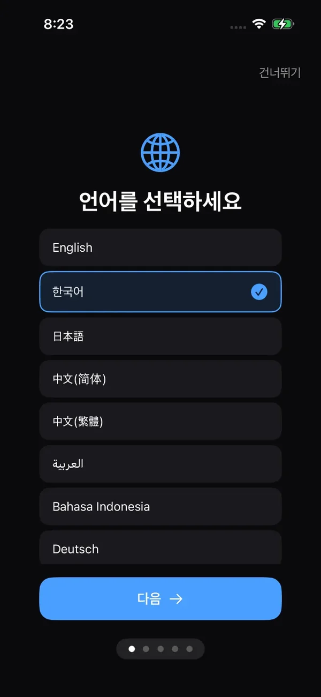
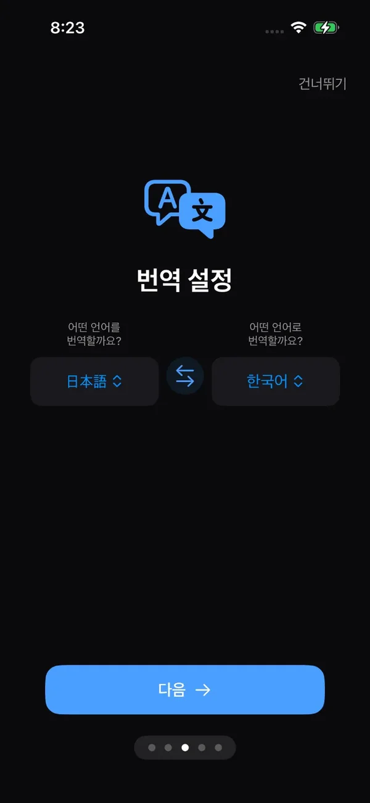
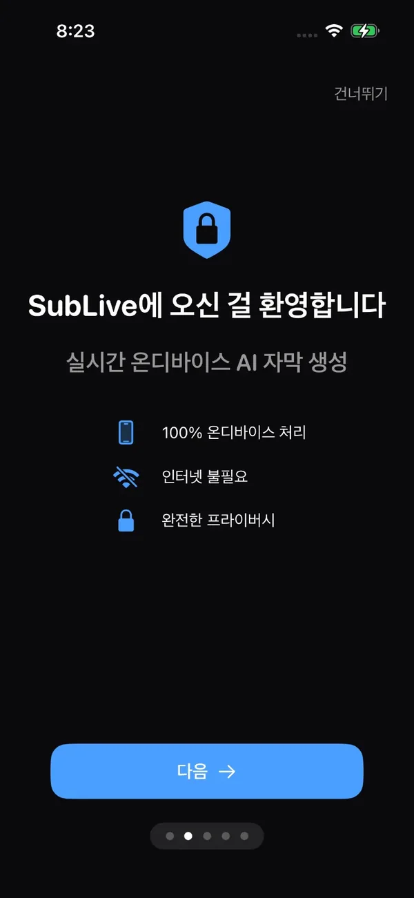
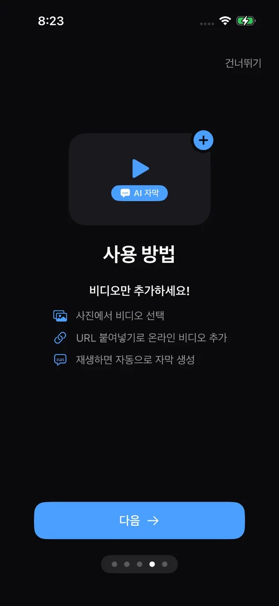
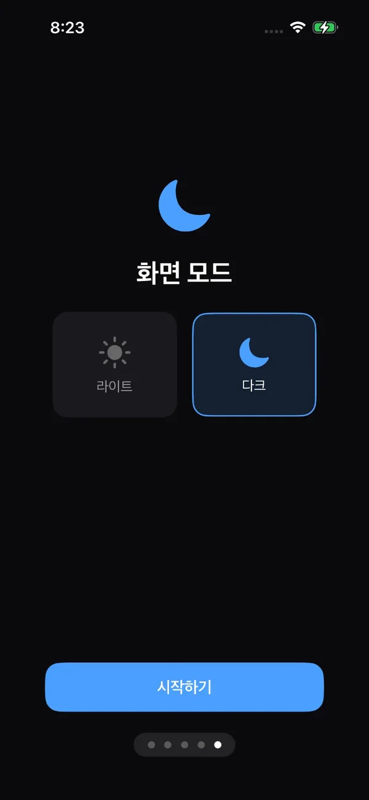
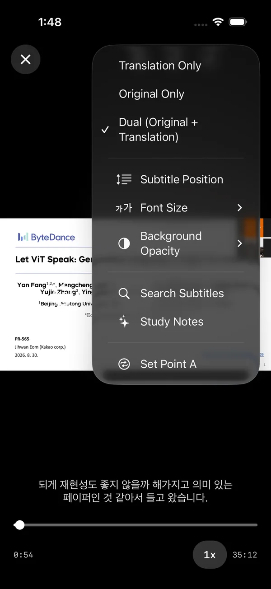
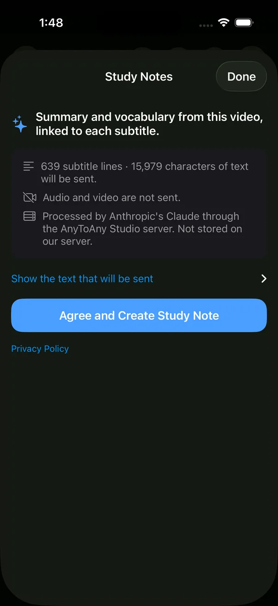
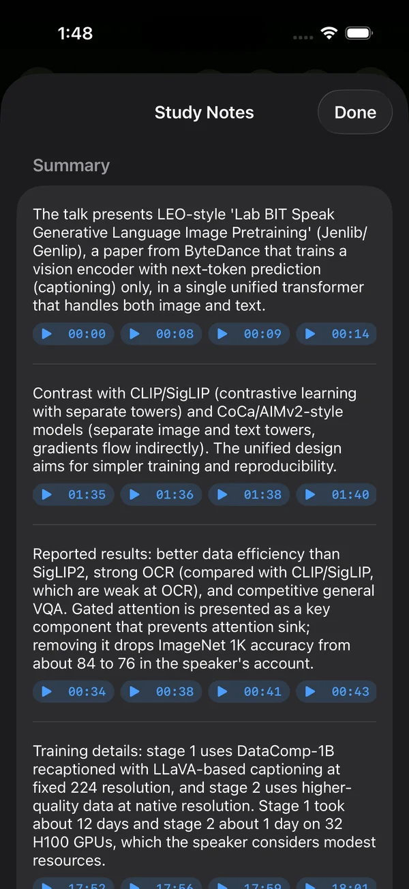
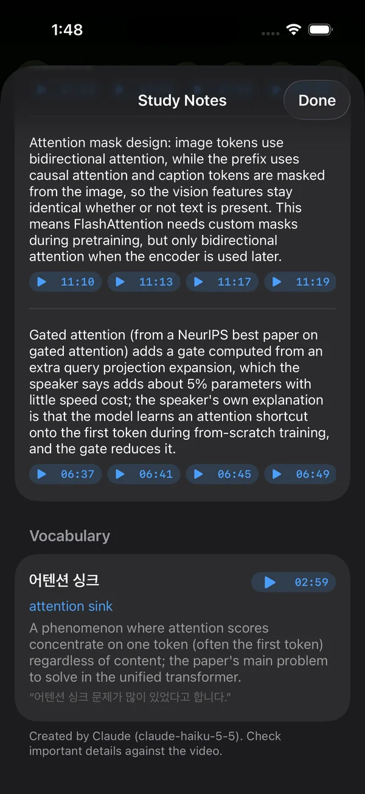
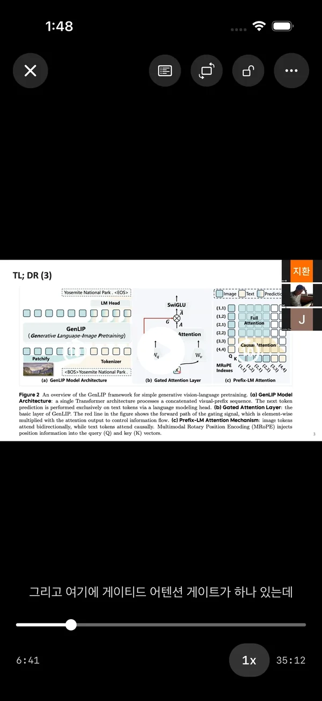

Subtitles for any video.
Made on your iPhone.
어떤 영상이든 자막을.
iPhone 안에서.
SubLive listens to the video you are watching, writes subtitles as it plays, and translates them into your language. Speech recognition and translation run on your device, and your videos are never uploaded.
SubLive는 재생 중인 영상의 음성을 듣고 자막을 만든 뒤, 원하는 언어로 번역합니다. 음성 인식과 번역은 기기 안에서 처리하며 영상을 업로드하지 않습니다.



Set up in five screens.
다섯 화면이면 준비 끝.


Subtitles in seconds.
몇 초 만에 첫 자막.
The first subtitles appear within seconds, and the rest keep coming while you watch.
첫 자막은 몇 초 안에 나타나고, 나머지는 보는 동안 계속 만들어집니다.
Open a video
영상 열기
Pick one from your photo library, paste a video link, or share a link to SubLive from another app.
사진 보관함에서 고르거나, 영상 링크를 붙여 넣거나, 다른 앱에서 SubLive로 링크를 공유합니다.
Recognize speech on-device
기기에서 음성 인식
Apple's on-device speech engine transcribes the audio in 40 language variants, with word-level timing.
Apple 온디바이스 음성 엔진이 40개 언어·지역의 음성을 단어 단위 타이밍과 함께 받아 적습니다.
Read in your language
내 언어로 읽기
Subtitles are split into readable lines and translated on-device, shown alone or alongside the original.
자막을 읽기 좋은 줄로 나누고 기기 안에서 번역합니다. 번역만 보거나 원문과 함께 볼 수 있습니다.
Made for watching and learning.
보고, 배우기 위해.
Built for lectures, interviews, and shows in another language, and for learning that language.
다른 언어로 된 강의, 인터뷰, 영상을 보고, 그 언어를 배우는 데 맞춰 만들었습니다.
On-device recognition
온디바이스 음성 인식
40 language variants and five sensitivity levels, with no internet connection required.
40개 언어·지역, 5단계 인식 민감도를 지원하며 인터넷 연결이 필요 없습니다.
Live translation
실시간 번역
Each new subtitle is translated as soon as it appears, using Apple's on-device translation.
자막이 생길 때마다 Apple 온디바이스 번역으로 바로 번역합니다.
Dual subtitles
이중 자막
Show the original and the translation together, with adjustable style and position.
원문과 번역을 함께 보여 줍니다. 스타일과 위치를 조절할 수 있습니다.
A-B repeat & speed
구간 반복과 속도 조절
Loop a sentence, slow it down, and double-tap to skip. Made for language learners.
문장을 반복하고, 속도를 늦추고, 두 번 탭해 건너뜁니다. 언어 학습자를 위한 기능입니다.
Search & edit
검색과 편집
Search the transcript, jump to any line, and fix words the recognizer got wrong.
자막을 검색해 원하는 줄로 이동하고, 잘못 인식한 단어를 고칠 수 있습니다.
SRT import & export
SRT 가져오기·내보내기
Save original or dual-language SRT files, or bring in SRT and VTT subtitles you already have.
원문 또는 이중 언어 SRT 파일로 저장하고, 갖고 있는 SRT·VTT 자막을 불러올 수 있습니다.
Your videos never leave your iPhone
영상은 iPhone 밖으로 나가지 않습니다
SubLive has no account, no analytics, and no ads. Audio, subtitles, and translations are processed and stored on your device. Only if you create a study note is that video's subtitle text sent, to make the note. Read the privacy policy.
SubLive에는 계정, 분석 도구, 광고가 없습니다. 음성, 자막, 번역은 기기 안에서 처리하고 기기에만 저장합니다. 학습 노트를 만들 때만, 노트를 만들기 위해 해당 영상의 자막 텍스트를 보냅니다. 자세한 내용은 개인정보처리방침을 확인하세요.
Learn from a video with Claude.
Claude로 영상에서 배우기.
Study Notes turns a video's subtitles into a short summary and vocabulary explained in context, using the Claude API. Every note links back to the subtitle it came from.
학습 노트는 Claude API로 영상의 자막을 짧은 요약과 문맥 속 어휘 설명으로 바꿉니다. 모든 노트는 원래 자막에 연결됩니다.
Review and agree
확인하고 동의
See how many subtitle lines and characters will be sent, and the text itself, before anything leaves your iPhone. The feature is off by default and can be turned off in Settings.
iPhone 밖으로 보내기 전에 자막 줄 수와 글자 수, 실제 텍스트를 확인합니다. 기본값은 꺼짐이며 설정에서 끌 수 있습니다.
Get a study note
학습 노트 만들기
Our server sends the subtitle text to Claude Haiku 5.5, which writes the summary and vocabulary notes. Audio and video are never sent, and no API key ships in the app.
자체 서버가 자막 텍스트를 Claude Haiku 5.5로 보내 요약과 어휘 노트를 만듭니다. 음성과 영상은 보내지 않으며, 앱에는 API 키가 없습니다.
Return to the source
원문으로 돌아가기
Each note carries subtitle timestamps; tap one to replay that moment. Notes that cannot be matched to a real subtitle line are dropped.
노트마다 자막 시점이 붙어 있어 누르면 그 장면을 다시 재생합니다. 실제 자막 줄과 맞지 않는 노트는 버립니다.




